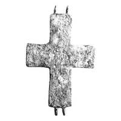

Catalog › CE-0266 · KOR2003-I.2.26
Valvă de revers de encolpion cu capete drepte, suprafață neregulată și imagini incizate foarte șterse
sec. XI (?) (1001–1100) · loc necunoscut · Muzeul Național de Istorie al Ucrainei, Kiev, inv. В 1005
single valve of a reliquary cross, aramă; c. XI (?) (1001–1100); find spot unknown; kept at Muzeul Național de Istorie al Ucrainei, Kiev.


Identificare
- Categorie
- Valvă izolată
- Material
- Aramă
- Tehnică
- Turnare în relief; Gravare (incizie)
- Dimensiuni
- Î 93 × L 70 × Gr 4.5 mm
Iconografie
- Revers
- Neidentificat
- Descriere revers
- Valvă de revers de encolpion cu capete drepte, cu suprafața foarte neregulată (cu gropi) și cu imagini foarte prost păstrate, executate cu linii adâncite incizate. În partea centrală se ghicește figura unui sfânt (Ioan Botezătorul? Ilie?) în picioare, cu mâna dreaptă îndoită la cot, cu părul lung. Deasupra umărului stâng al sfântului se vede o cruce, deasupra capului lui imaginea în profil a unei păsări cu aripa ridicată, pe laturi contururile unor sfinți redați bust. Inscripții adâncite: s-au păstrat numai litere izolate, la umărul drept al sfântului reprezentat în întreaga statură – ОАС, la stânga lui – [Н]С.
- Inscripții
- ОАС; [Н]С
- Limba
- Greacă
Datare și atribuire
- Datare
- sec. XI (?) (1001–1100)
- Centru
- Necunoscut
- Tipologie
- Korzukhina–Peskova 2003, tip I 2
Descoperire
- Context
- Colecție (fără context)
Păstrare și referințe
- Colecție
- Muzeul Național de Istorie al Ucrainei, Kiev
- Nr. inventar
- В 1005
- Bibliografie
- G. F. Korzukhina, A. A. Peskova, Древнерусские энколпионы. Нагрудные кресты-реликварии XI–XIII вв., Sankt-Petersburg, 2003 [Korzukhina–Peskova 2003], p. 58, cat. nr. I 2/26, reprodusă la Табл. 15 (planșe, p. 257). Bibliografie citată în sursă: Корзухина, архив ф. 77, д. 15, л. 6. Publicată și în A. A. Пескова, Л. В. Строкова, Христианские древности Византии в «Сирийской коллекции» Б. И. и В. Н. Ханенко, Sankt-Petersburg–Kiev, 2012 [Peskova, Strokova 2012], p. 187, cat. nr. 75, ilustrația (fotografie și desen) la aceeași pagină.
- Figura
- Табл. 15
- Planșe
- Korzukhina–Peskova 2003, Табл. 15 (planșă fără paginație proprie în PDF; p. 257 tipărită)
- Observații
- Datare după Peskova: sec. XI (?). Coordonate: nu sunt date în sursă.
Citare: Corpus Encolpiorum, CE-0266, Valvă de revers de encolpion cu capete drepte, suprafață neregulată și imagini incizate foarte șterse, https://vitaliejosanu1979-ux.github.io/primul-meu-proiect/piese/KOR2003-I.2.26/ (accesat 2026-10-17).